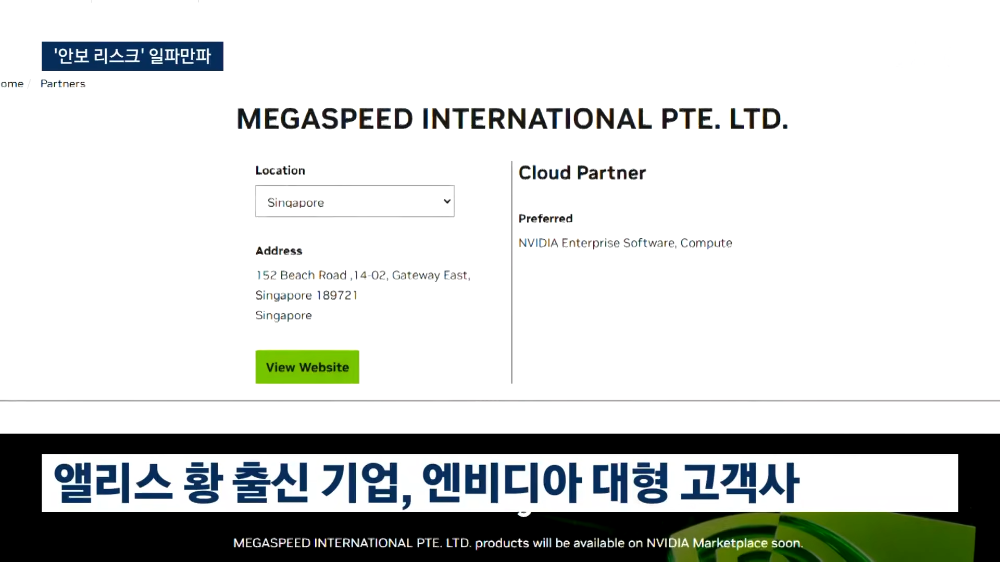
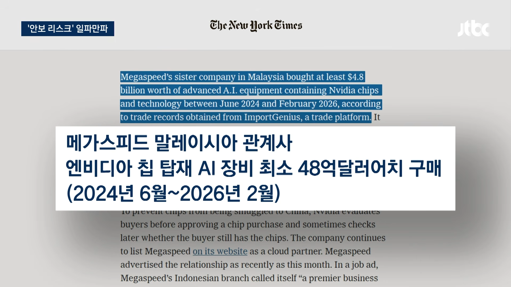
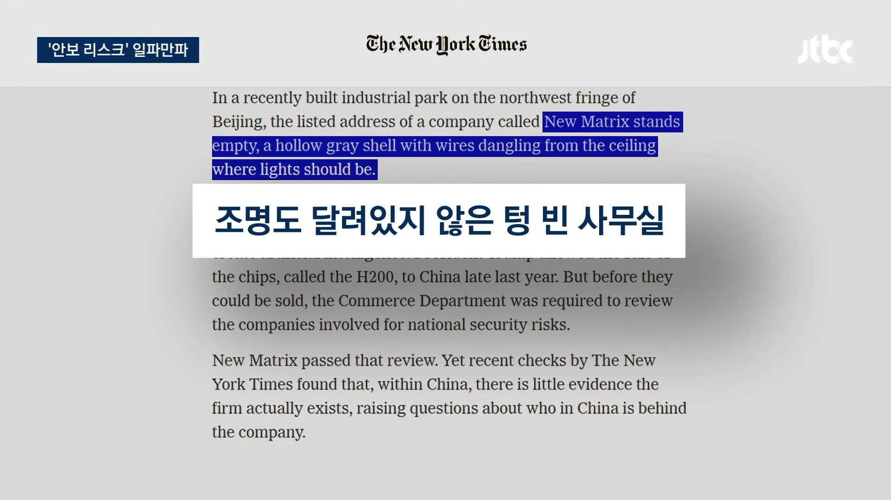
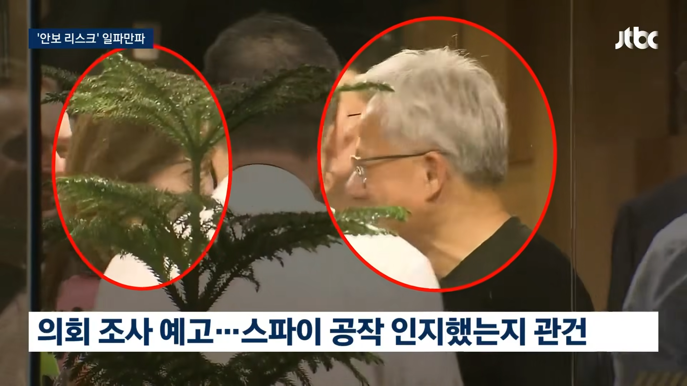

구매한 그래픽 카드는 모두 중국으로 넘어갔을 거라고




구매한 그래픽 카드는 모두 중국으로 넘어갔을 거라고
이제 아시안계 특히 중국계는 한동안 찌그러져 있었야겠네
문제는 서양놈들이 보기에 일본, 한국, 중국이 구별이 안되서 모두까기 할거 같다는거 ...
ㄹㅇ 코로나때도 중국이 한건 아는데 서양애들 눈엔 이게 중국인인지 한국인인지 구분 안가니까
엄한 한국인 염산 테러 당하는거 보고 그때 현지에 사는 한국인들 존나 무섭다고 하더라
짜장ai 지금까지 현지본토음식 가정하더니 ㅋㅋ 주방장이 코쟁이였어?
암튼 스파이 아님
여기서 한국인들도 5090을 중국으로 보내고 있어요!!
그러니까 핵심 기술은 안넘어갔는데 글카는 털렸다는거네?
인류에 대한 배신이다 이건
이제 글카 내려오나?
젠슨황이 망한거지, 엔비디아나 AI가 망한건 아닌지라 ㅋㅋㅋㅋ
일부분은 말레이시아 데센에 있다는건 확인한 거 아님?
한국와서 잘 놀때 엄청 호감이었는데말이지
이래서 아시아계가 ceo올라가기까지가 진짜 힘든거같음 이너서클 인도계보다도 배제하는 이유..중 하나
내가 이쪽분야 잘 몰라서그런데 설계도 털린것도아니고 완제품 가진게 큰일임? 진짜잘몰라서그럼 시진핑개병신새끼 ㅇㅇ
미국 내에서 gpu는 ai 전략물품임. 국외반출 자체를 통제 중이었고 수출하려면 허가를 받아야함. 근데 황가놈은 그걸 무시하고 중국 페이퍼 컴퍼니에 팔아치운거임.
미국이 첨단제품?뭐그런거 중국 견제용으로 수출금지햇는데 미국인이 중국에 판매한게돼서 문제되는그런거아님?
ㅇㅇ 전략물자로 보고 중국에 수출도 제한 거는 상황인데 전략물자 사장이 바람피고 내연녀한테 팔지말라는거 판 상황이니깐
AI돌릴려면 고성능 칩이 필요한데 저성능칩은 아주 큰 공간에 아주 작은 효율이 나오는 반면 고성능칩은 작은 공간에 큰 효율을 낼 수 있음, 에너지 소모도 더 적게 들어가고, 문제는 저렇게 빼돌린게 한두개가 아니라 한 국가에 공급할만큼한 수량이 빠져나갔다는거임,
그걸로 AI 만들까봐 통제하는거지
납품 단가가 얼마였을라나
젠슨황이든 엔비디아든 알고 팔았냐, 모르고 당했냐가 중요하겠지 뭐
외신 다른 글 보면 중국으로 넘어갔다기 보단 중국 우호 동남아지역에 데이터센터를 세우고 중국인력이 넘어와서 연구했다고 보던데 ㅋㅋㅋㅋㅋ 합법적 규제우회를 이런식으로 한 듯
젠슨황도 한남이네 그냥 치킨회동한게 아니구나
그건 과잉해석이고
근데 알고는 팔지 않지 않을까? 어떻게 될지 뻔히 아는데 그걸 알고 팔아?
한국도 사실 5090 물량 죄다 중국으로 빼돌리고 있는 마당인데 다 한통속이지..눈가리고 아웅.
스파이 맞긴 맞네..황회장이 진짜 몰랐을까??
얼굴만 본거면 모를까 몸과마음다준 것 같던데 멘탈 터질듯
세계에 gpu가 부족한게 아니라 도둑놈이 많았었구만?

ㅋ
알고 판 거지
돈 많이 받고
속이 텅~